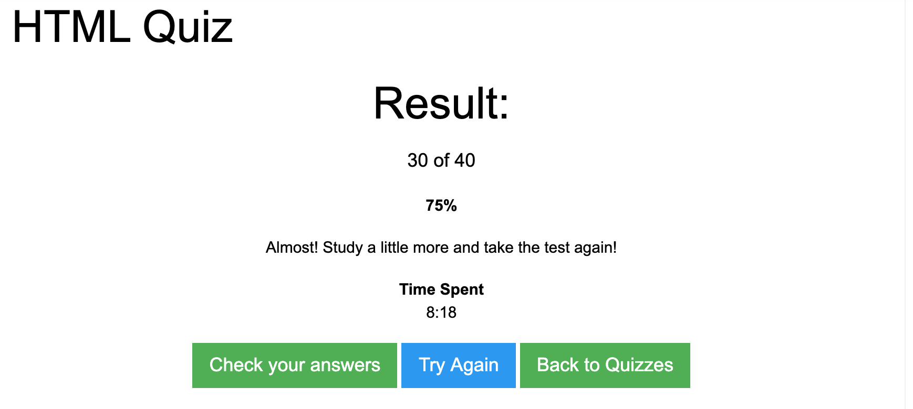

Lesson 1.3 - 13/10/2020
These were introductory lessons
Lesson 1.4 - 15/10/2020
In todays session Alex introduced us to Git/Github and explained the benefits of using and why. We were shown VSCode text editor and the benefits of using this particular editor. We installed a few extensions (ES Linter, Live server and HTML snippets). We also learned how to commit code to Git and push it up to the main branch on Github and understand the icons in Git (new file, deleted file, edited file)
There was an introdcution to some basic html h1 and p tags
Lesson 2.1 20/10/2020
Tasks 2.1.1 - 2.1.4
In this lesson we learn HTML basics, understanding elements and how an element is structured as well as an HTML boiler plate and what the head and body are used for. We used H1s, tables , ordered and unordered lists, anchor tags and links, aswell an image tags. We also continued to familiarise with Github branching and commits.
Lesson 2.2 22/10/2020
Tasks 2.2.1 - 2.2.2
In this lesson we learnt CSS basics. We learnt about the structure of CSS, what the selector is and the declaration which has the property and the value. We were shown the various ways a styles can be added to HTML style tag, (inline, internal (with style tags) and an external style sheet) and the used for each of these options.
Lesson 2.2 takeaway task
w3 schools html quiz

Lesson 2.3 27/10/2020
Tasks 2.2.3 - 2.3.3
This week we looked more at CSS and learnt about more of the CSS selectors, classes and IDs. We also looked at the specificity of CSS. We looked at inline and block elements and spans, pseudo classes and also the how the CSS is read (cascading). We used more properties to decorate and style our HTML. Luke also taught us some useful shortcuts in VS code and showed us the shorthand for CSS for fonts.
Lesson 2.3 cont & 2.4 29/10/2020
Tasks 2.3.4 -